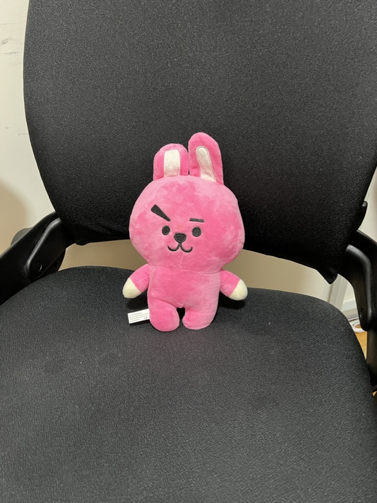

| Person | Ducky Name | Description | Picture |
|---|---|---|---|
| Kevin | Bob | He is a pink bunny that my friend gave me. Bob has seen only the darkness of my closet as I have kept him there for many years. But when he became my ducky, everything changed. Dun dun dun! Stay tuned for the next episode. |  |
| Faiyaz | Horizon | He is a yoyo which is black and silver, with pink splashes |

|
| Wan Ying | Pancake | He is a real, existing guinea pig. |


|